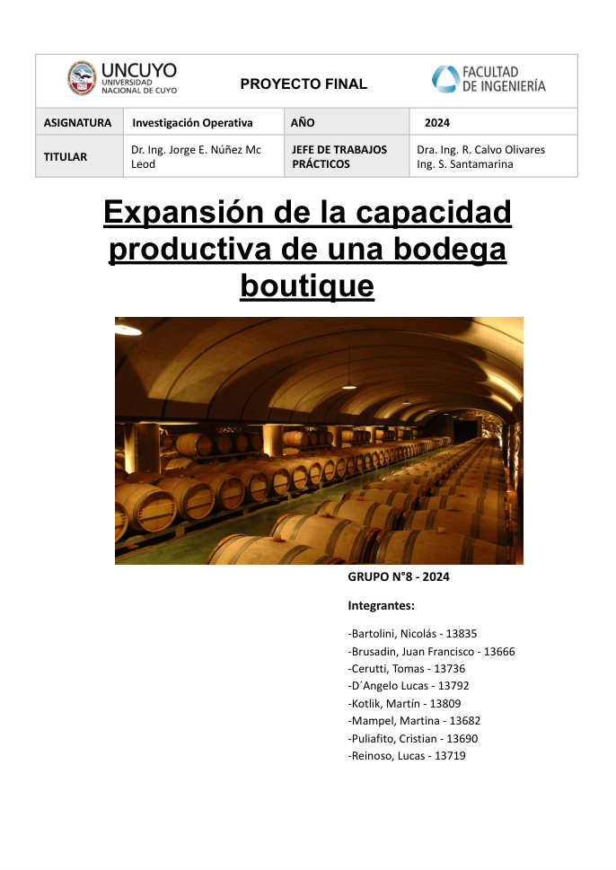

OPERATIONS RESEARCH · TEAM PROJECT · 2024
Winery Production Capacity Expansion
Planning and risk analysis for expanding a boutique winery’s fermentation capacity.
MS ProjectGanttPERT/CPMMonte Carlo

PROJECT OVERVIEW
From challenge to engineering analysis
Plan the expansion
Structured tasks, resources and scheduling for commissioning ten fermentation tanks as part of a capacity expansion plan.
Analyze schedule and risk
Used critical-path analysis, resource balancing, project acceleration and risk assessments to support planning decisions.
Scope: An academic team project based on the documented expansion scenario.